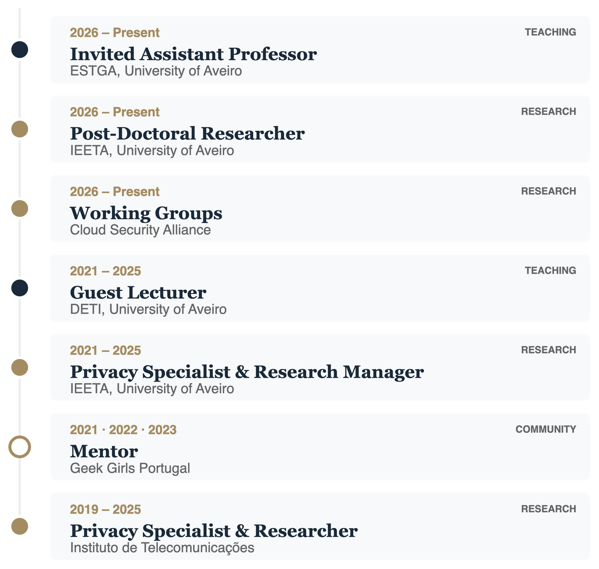

2026
Self-Adaptive Governance for Elastic Privacy in Mental Health Digital Phenotyping
International Conference on Future Internet of Things and Cloud (FiCloud).
Invited Assistant Professor | Post-Doctoral Researcher
I am an Invited Assistant Professor at ESTGA, University of Aveiro, where I coordinate courses on cloud infrastructure, communication technologies for the Internet of Things and web technologies, and a Post-Doctoral Researcher at the Institute of Electronics and Informatics Engineering of Aveiro (IEETA).
I hold a Ph.D. in Computer Science (MAP-i) with a thesis on improving privacy in service environments. My research addresses privacy engineering and cybersecurity: quantitative privacy models, anonymization and compliance by design. Within the EU 6G project RIGOUROUS I proposed the term DevPrivOps, the integration of privacy and data protection into the software development lifecycle, and I have since applied it to IoT and 6G network environments, with first-author articles in Q1 journals such as IEEE Communications Magazine and Computer Communications.
I bring hands-on industry experience in governance, risk and compliance, and I contribute to standardization as a member of the W3C Data Privacy Vocabularies and Controls Community Group and of the IEEE Digital Privacy initiative. In the classroom I favor collaborative, project-based work on real systems, and I have supervised Master's theses and internships in cybersecurity and privacy.
University of Aveiro
Thesis: "Towards Improved Privacy in Service Environments"
Autónoma Academy
Personal Data Protection, Privacy, and Cybersecurity in EU
University of Aveiro
Thesis: "Selective Sharing Permissioning in IoT Environments"

Core areas of scientific expertise and technical engineering.
Specialized in quantitative privacy models, cryptography, and ensuring regulatory compliance alongside ethical AI integration.
Bridging the gap between software development and privacy requirements by embedding compliance-by-design principles into architecture.
Pioneering the proactive integration of privacy protocols and security mechanisms within the continuous software development lifecycle.
Designing secure, resilient, and highly scalable communication architectures and alternate-tenancy models for IoT and 6G networks.
Highlighting key contributions to national and European funded research initiatives.
Proposed the DevPrivOps concept. Developed quantitative security/privacy models and designed a novel data categorization system based on legal aspects.
Co-coordinated Cybersecurity and Cyber-resilience services. Monitored application-level communication and applied Minimum Security Baselines (ISO, NIST, OWASP).
Developed quantitative privacy models applied to medical scenarios and conducted rigorous ISO 27001 compliance assessments for medical applications.
Developed a privacy management platform for user data control, introducing functional consent receipts and compliance protocols for IoT scenarios.
Highlighted recent scientific publications (2026).
International Conference on Future Internet of Things and Cloud (FiCloud).
International Conference on Data Science, Technology and Applications (DATA).
Explore the complete list of my ~30 publications and over 170 citations on the following platforms:
Courses currently coordinated at ESTGA and corresponding study materials.
Client-side programming, semantic HTML, CSS, and dynamic web applications.
View Course MaterialsIoT reference architectures, wireless and low-power communication technologies, IPv6 for constrained devices, and message-oriented middleware.
View Course MaterialsDatacenter architecture, virtualization and containers, Kubernetes and SDN, Infrastructure as Code, service resilience, distributed storage, and systems management.
View Course Materials